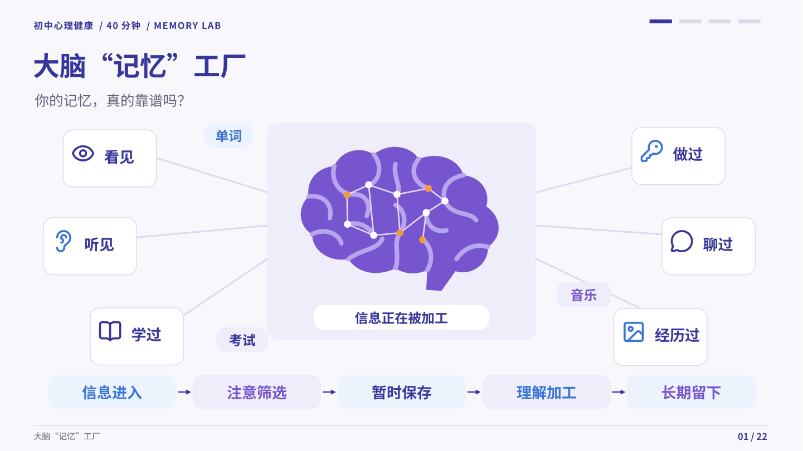

初中心理健康 · 40分钟 · 22页
大脑“记忆”工厂
你的记忆，真的靠谱吗？
沿着信息的路径，找到让重要知识留下来的方法。
01 / 大脑“记忆”工厂
16:9
第 1 / 22 页
可用键盘 ← → 翻页
一堂课，一张逐渐展开的地图。
点击任意页面，查看完整预览。
初中心理健康 · 40分钟 · 22页
你的记忆，真的靠谱吗？
沿着信息的路径，找到让重要知识留下来的方法。

第 1 / 22 页
可用键盘 ← → 翻页
点击任意页面，查看完整预览。